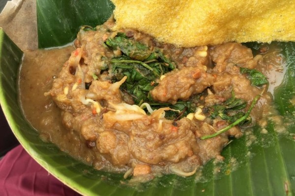

Surabaya, City of Heroes
Hometown, Sept 28, 2021

Surabaya is a port city on the Indonesian island of Java. A vibrant, sprawling metropolis, it mixes modern skyscrapers with canals and buildings from its Dutch colonial past. It has a thriving Chinatown and an Arab Quarter whose Ampel Mosque dates to the 15th century. The Tugu Pahlawan (Heroes Monument) honors the independence battles waged in Surabaya’s streets in 1945.
Semanggi Surabaya, Our Local Classic
Food, Sept 28, 2021
Semanggi or Pecel Semanggi is a type of typical food from Surabaya , East Java , made from steamed clover leaves and then enjoyed with a delicious spicy chili sauce . Clover can also be served with sprouts , kale , uli crackers made from rice, and seasonings made from yams . The sauce or seasoning used in clover food has different raw materials and tastes.
Jembatan Suramadu, the Longest Bridge in Town
Tourist, Sept 28, 2021

The Suramadu Bridge, also known as the Surabaya–Madura Bridge, is a cable-stayed bridge between Surabaya on the island of Java and the town of Bangkalan on the island of Madura in Indonesia. Opened in June 2009, the 5.4-km bridge is the longest in Indonesia and the second longest in southern hemisphere.